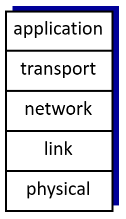
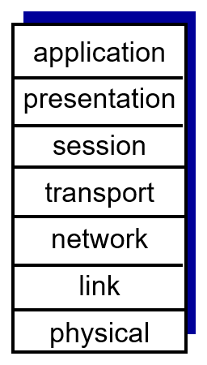

Protocol Layers and Reference Models
Networking systems are complex, requiring a structured approach to enable seamless communication across diverse hardware and software components. The concept of protocol layers and reference models helps organize this complexity and standardize communication processes in network systems.
Why Use Layers?
- Modular Design: Breaking down the network into layers allows independent development and maintenance of each layer. For instance, improvements in the physical connection method don't affect higher layers like applications.
- Easy to Understand: Layers break the network into smaller parts, making it easier to see what each part does.
- Standard Rules: Using layers ensures that devices from different companies can work together.
Main Reference Models
- Internet Protocol (IP) Stack
This is the model used by the Internet. It has five layers:
- Application Layer: Handles programs like websites and email (e.g., HTTP for web, SMTP for email).
- Transport Layer: Moves data between programs on different devices (e.g., TCP ensures reliable delivery).
- Network Layer: Finds the best path for data to travel (e.g., IP addresses).
- Link Layer: Transfers data between devices that are directly connected (e.g., Ethernet, Wi-Fi).
- Physical Layer: Sends raw data as electrical signals or radio waves.
Each layer does a specific job and works with the layer above and below it.
Here is an image illustrating the internet protocol stack:

- OSI Model
The OSI model is another way to organize networks. It has seven layers, making it more detailed than the internet stack:
- Application Layer.
- Presentation Layer: Prepares data for the application (e.g., encrypting or compressing files).
- Session Layer: Manages communication sessions between devices (e.g., keeping a video call active).
- Transport Layer.
- Network Layer.
- Link Layer.
- Physical Layer.
Unlike the Internet stack, the OSI model has two extra layers: Presentation and Session. These are often included in the Application Layer in modern systems.
Here is an image illustrating the ISO Model:

How Data Travels (Encapsulation)
When data is sent over a network, each layer of the protocol stack adds extra information, known as a header, to help with its delivery.
The Application Layer creates the message, such as an email, and passes it to the Transport Layer, which divides it into smaller pieces called segments.
The Network Layer adds the destination address to these segments to create packets. The Link Layer then wraps each packet in a frame for local delivery.
Finally, the Physical Layer converts the frame into signals, such as radio waves or electrical pulses, for transmission.
At the receiving end, this process is reversed. Each layer removes its corresponding header step by step, a process called decapsulation, to rebuild the original message for the recipient.

However, one drawback of layering is that it adds extra work to the network process, as headers are added and removed at each layer, which takes time and uses resources.
Additionally, the fixed structure of the layers can sometimes be inefficient, as it may not always provide the fastest or most optimal way to handle certain tasks.
Conclusion
Protocol layers and reference models help us manage networks by breaking down tasks into smaller, organized parts.
Whether it is the simpler Internet stack or the more detailed OSI model, these systems make networks easier to use, fix, and upgrade. They are key to how the Internet and other networks work today.